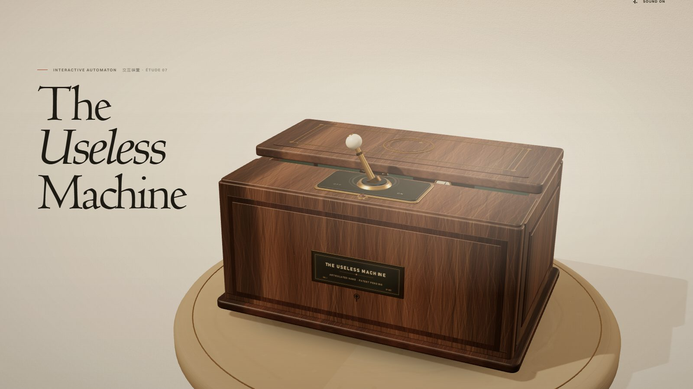

Case file 07 · Web technologies 2026
Jiaming Guo
This is a project I made for practice. It shows what I've done this semester.
Open case · 07

File 01
What's pinned to the board
Four directions, one semester. Each card opens a different file.
Start here
File 02
Statements
Fifteen witnesses, on what making things is actually for.
Open file →File 03
Open cases
Five goals for the next two years, each with a date.
Open file →File 04
Subject
Who is filing this case, and the one address that reaches him.
Open file →File 05
The exhibit
One machine whose only job is to undo the thing you just did.
Open file →Summary
Case status
Filed by hand for the Web Technologies course, 2026.
05
Pages on file
15
Statements logged
05
Cases still open
01
Useless machine